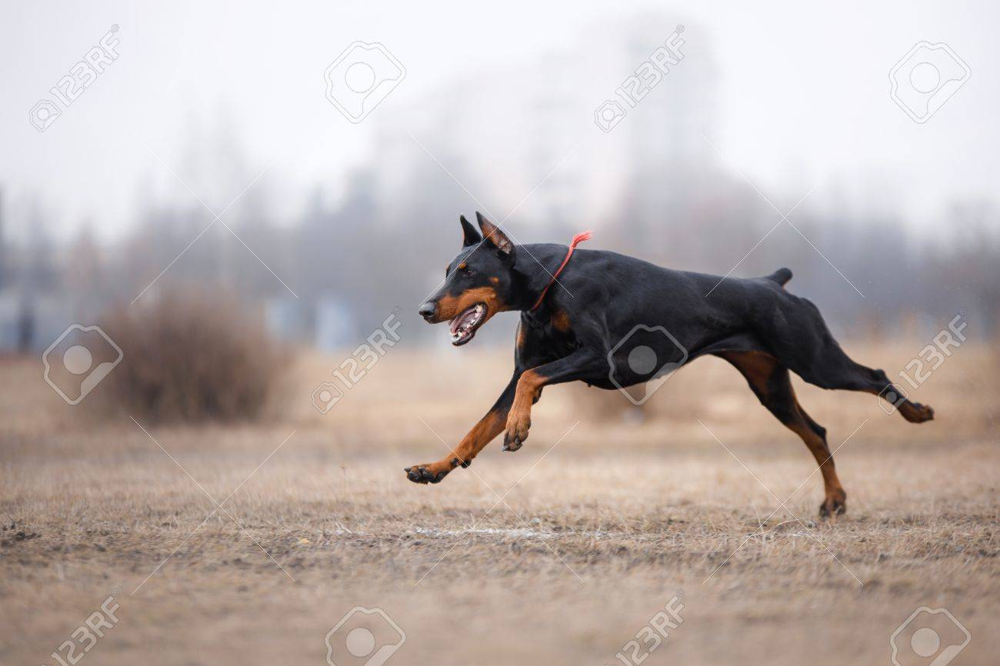
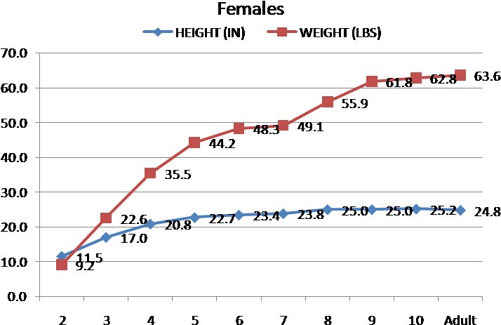

Proper Exercise for Dobermans
The Doberman is an intelligent, well muscled and high energy large breed dog. They require between 1 to 2 hours of exercise daily to maintain good health and to prevent boredom and too much pent up energy. Boredom and too much energy are one of the main causes of behavior issues in dogs. This can include destructive behavior, nuisance barking, digging and even escaping. This exercise requirement is for a healthy adult Doberman. The exercise needs of a Doberman puppy will be different due to their growing and developing bodies.

